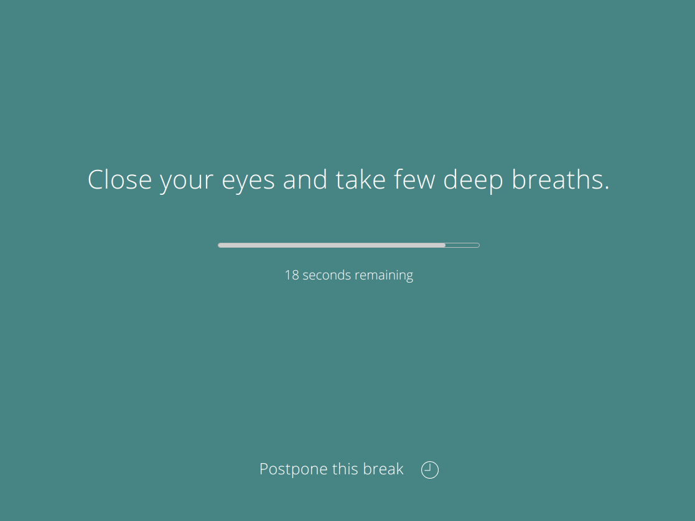

Archive for
"stretchly"
Posted under
stretchly
on
Hi everyone,
I am really happy to announce, that version 1.2 of Stretchly is here! You can download it from downloads page.
Added
- new break ideas
- Contributors can sync preferences
- Nepali translations
- snap package
Changed
Posted under
stretchly
on
Hi everyone,
I am really happy to announce, that version 1.1 of Stretchly is here! You can download it from downloads page.
Added
- show Contributor Settings in tray menu for Contributors
- breaks are paused if the Windows 10 Focus Assist mode is...
Posted under
stretchly
on
Hi everyone,
I am really happy to announce, that version 1.0 of Stretchly is here! You can download it from downloads page.

Version 1.0 is big milestone for Stretchly, and getting there was huge learning experience. Thanks to everyone who contributed...
Posted under
stretchly
on
So you wanna help to translate Stretchly? Awesome!
You can now easily translate via Weblate online :)
This guide assumes that you know your way around command line and a bit or two about NodeJS, git and Github.
But if you are willing to learn something...
Posted under
stretchly
on
Hi there guys, I am really happy to release version 0.21.1 of stretchly. You can download it from downloads page.
stretchly is cross-platform open source app that reminds you to take breaks when working with computer.
If you enjoy stretchly, consider...
previous page
Page 6 of 13
next page